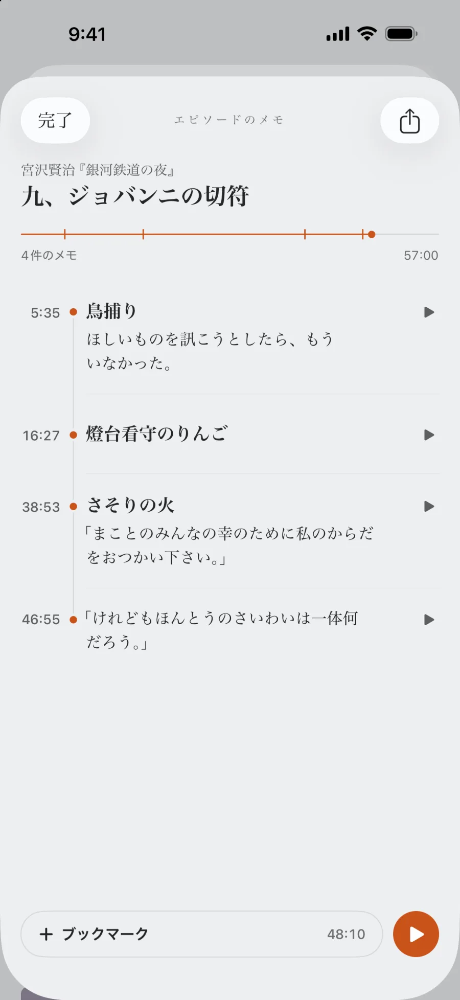
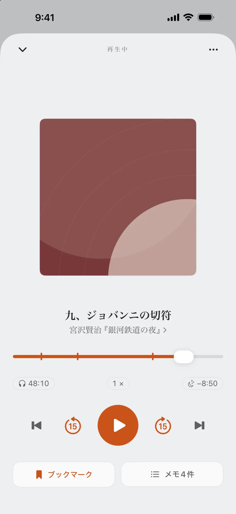
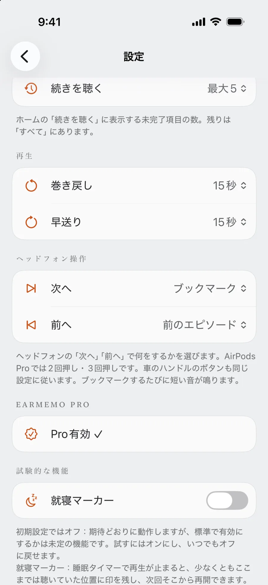
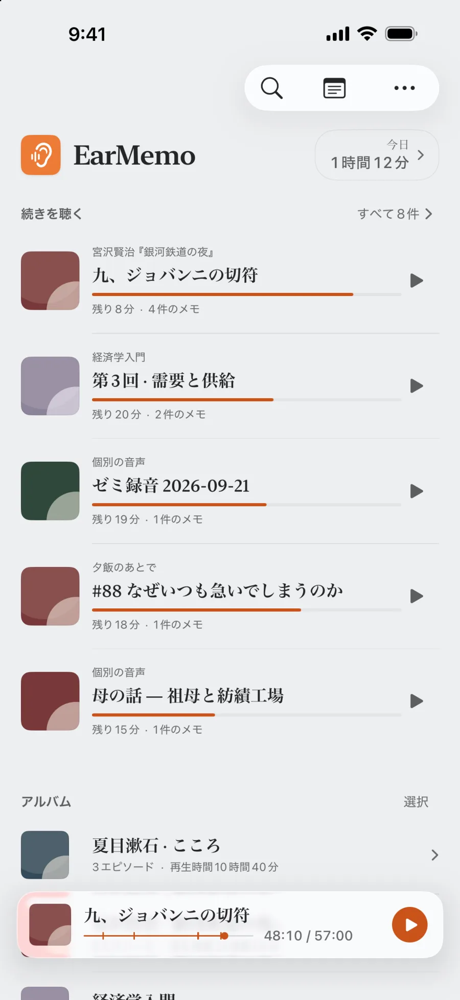
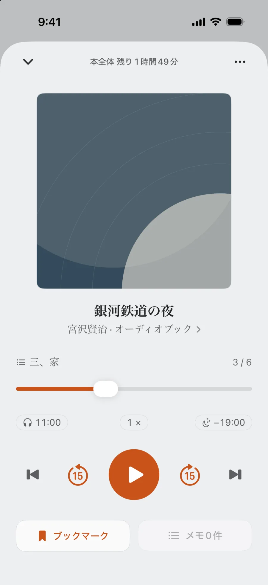
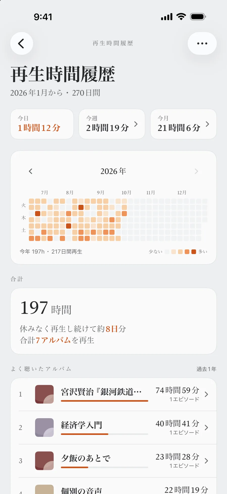
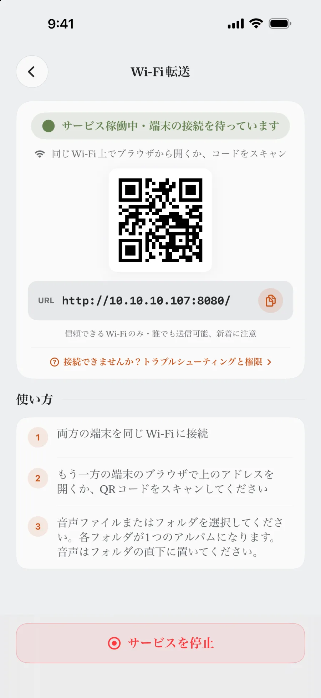

手元の音声を、じっくり聴く。
手元の MP3・M4B のオーディオブックや講義、録音を iPhone で再生。EarMemo は再生位置を覚え、メモを秒単位で音声に結びつけます。AirPods のボタン操作でもマークできます。再生にアカウントやインターネット接続は不要です。
サブスクリプションなし · Pro は買い切り


EarMemo を作った理由
聴きたい音声に、集中できる。
EarMemo は、聴く時間を邪魔しません。
おすすめのフィードも、次のエピソードの自動再生も、終わらないリストもありません。ダウンロードした長い音声を、静かにひとつの場所へ。残しておきたい一文で止めれば、明日もその場所から聴き直せます。
メモ
その瞬間に戻れるメモ
残したい言葉に出会ったら、ワンタップでマークして、そのまま聴き続けましょう。メモはその場でも、あとからでも書けます。各メモは音声の再生位置に結びついているので、タップすればその瞬間から聴き直せます。聴いたことを、手元に残せます。
再生中に「マーク」を押してください。時間をタップすると、その位置に戻れます。
- タイムスタンプ付きメモから、ワンタップで聴き直し
- アルバム・エピソード別に整理。オーディオブックでは章ごとに表示
- 買い切りの Pro でメモを Markdown に書き出し
ヘッドフォン
iPhone を取り出さずにマーク
手がふさがっていても、残したい言葉を逃しません。AirPods を 2 回押すと短い音が鳴り、その位置を保存。文の始まりを拾えるよう、2 秒前にマークします。文章はあとから書けます。
- 最初に設定。 設定 → ヘッドフォン操作 → 次へ： ブックマーク
- 2 回押す AirPods Pro で操作（「前へ」に設定した場合は 3 回）
- 確認音が鳴ります。 マークがメモに保存されました。
- 押すたびにひとつのマーク。無料版でも無制限
- 車のステアリングスイッチにも同じ設定が適用されます


ライブラリ
聴きかけの音声を、ひとつの場所に
いま聴いているものが、ひとつの画面に。再生位置と残り時間を覚えているので、タップすればすぐ続きへ。「どこまで聴いた？」と探す必要はありません。
- 「続きを聴く」で、止めた位置から秒単位で再開
- ファイルをアルバムにまとめ、自由に並べ替え
- 今日の再生時間を画面上部に表示
オーディオブック
章を聴きながら、本全体も見渡せる
M4B など、チャプター（章）情報が埋め込まれたオーディオブックでは目次を表示します。再生バーには現在の章の進み具合、その上には本全体の残り時間を表示。いつでも本全体の進行表示に切り替えられます。メモも章ごとにまとまります。
- 目次から章を選択。「前へ」「次へ」で章移動。ヘッドフォンや車でも
- メモは章ごとに整理。Pro の Markdown 書き出しには章内と本全体での再生位置を記載
- 章の終わりで止まるスリープタイマー


再生履歴
1 年の「聴く」を見渡す
今日も、今週も、今年も。長い音声を聴いた時間を EarMemo が記録します。誰かと競うためではなく、「いつも聴いている気がする」を目に見える数字にするために。
- 年間ヒートマップで、日々の再生をひと目で確認
- 日・週・月ごとと、累計の再生時間
- 記録は端末内だけ。アップロードも外部分析もありません
読み込み
手元のファイルを、すばやく取り込む
パソコンのブラウザで指定のアドレスを開き、ローカル Wi-Fi で音声をドラッグ。ケーブルもクラウドも不要です。iOS の共有シートから、メッセージ・メール・ファイルの音声も取り込めます。
- ブラウザから Wi-Fi 転送。ケーブル・クラウド不要
- メッセージ・メール・ファイルの共有シートから読み込み
- mp3・m4a・m4b・flac・aac・wav に対応。mp4・mov は音声のみ再生

ほかにも、聴くための機能を
スリープタイマー
Dynamic Island とロック画面にライブアクティビティで残り時間を表示。
バックグラウンド・ロック画面
コントロールセンターとロック画面から再生を操作。
再生速度の変更
声の高さを変えずに、速くもゆっくりも。
Siri とショートカット
声で再生、一時停止、スキップ、ブックマークを操作。
共有シートから読み込み
メッセージ・メール・ファイルなど、共有できるアプリから音声を送れます。
幅広い形式に対応
mp3・m4a・m4b・flac・aac・wav に対応。mp4・mov・m4v は音声のみ再生。M4B の章情報も読み取ります。
プライバシー
仕組みそのものが、プライバシーを守る
EarMemo に独自のサーバーはありません。設定、再生位置、メモ、ブックマーク、統計は端末内と、有効にしている場合はご自身の iCloud バックアップに保存されます。Wi-Fi 転送はローカルネットワーク内だけ。購入は Apple StoreKit が処理します。
プライバシーポリシーを読む →- データ収集なし
- サードパーティ SDK なし
- 広告・トラッキングなし
- アカウント・ログイン不要
料金
無料でダウンロード。すべての機能は買い切りで。
無料でダウンロードして、自分のペースで。再生できるアルバムは同時に 1 つ、試せる音声ファイルはアルバム内のエピソードと個別の音声を合わせて計 10 本。再生回数の制限ではありません。マークは無制限で、そのうち 5 件にメモを書けます。読み込み・再生機能はすべて利用できます。EarMemo Pro は日本の App Store で1,300円の買い切り。すべての機能が使えます。サブスクリプションも広告もありません。
よくある質問
EarMemo とは？
EarMemo は、ポッドキャスト、オーディオブック、講義、録音など、長い音声のための iOS 用ローカルプレーヤーです。設定、再生位置、ブックマーク、メモ、再生統計はすべて端末内に保存。独自サーバーを持たず、開発者へのアップロードも、アカウント登録もありません。
似た名前の AI 学習アプリと関係がありますか？
いいえ。EarMemo は Fan YANG が開発した iPhone・iPad 用のオフライン音声プレーヤーです。手元の音声を聴くためのアプリで、似た名前の AI 学習・暗記サービスとは無関係です。AI 機能、アカウント、独自サーバーはありません。
Apple Podcasts や Spotify との違いは？
EarMemo は、ダウンロード済みのポッドキャスト、オーディオブック、講義、ボイスメモなど、手元の音声ファイルを再生します。配信カタログやサブスクリプション、アカウントはありません。自分で管理する長い音声を、ひとつの道具でじっくり聴くために作りました。
オフラインで使えますか？
はい。再生、統計、メモはインターネット接続なしで利用でき、機内モードでも動作します。任意で使える Wi-Fi ファイル転送には、Wi-Fi をオンにしてローカルネットワークに接続する必要があります。
AirPods などのヘッドフォンでブックマークできますか？
はい。「設定 → ヘッドフォン操作」で「次へ」または「前へ」をブックマークに設定します。AirPods Pro を 2 回（次へ）または 3 回（前へ）押すと、短い確認音とともに現在位置をマーク。ほかのヘッドフォンは曲送り・曲戻しのボタンを使います。車のステアリングスイッチも同じ設定に従います。無料版でもマークは無制限です。
対応する音声・動画形式は？
mp3、m4a、m4b、aac、flac、wav などに対応しています。動画（mp4、mov、m4v）は音声のみを再生します。Apple Books や Audible で購入した DRM 保護付きファイルは読み込めません。
M4B の章に対応していますか？
はい。M4B など章情報を持つ本では目次を表示し、「前へ」「次へ」で章を移動できます。進行バーは現在の章と本全体を切り替え可能。本全体の残り時間も表示します。メモは章ごとに整理され、スリープタイマーは章の終わりで停止できます。
データを収集しますか？
いいえ。ユーザーデータは収集しません。サードパーティ SDK、アクセス解析、広告、トラッキングもありません。すべてのデータは端末内に保存され、iCloud を有効にしている場合はご自身のバックアップに含まれます。
iPad でも使えますか？
はい。iPhone と iPad の両方に対応しています。iPad では広い画面に合わせた分割表示を利用できます。
ほかのアプリからファイルを読み込めますか？
はい。iOS の共有シートから、メッセージ、メール、ファイルなど、音声や動画を共有できるアプリのファイルを EarMemo に送れます。
無料版は期間限定のお試しですか？
無料枠に期限はありません。再生できるアルバムは同時に 1 つ、試せる音声ファイルはアルバム内のエピソードと個別の音声を合わせて計 10 本。再生回数の制限ではありません。マークは無制限で、5 件にメモを書けます。読み込み・再生機能はすべて利用可能。枠を超えた項目も表示・削除でき、Pro の買い切り購入で再生ロックを解除できます。
以前の有料版を購入しました。再購入は必要ですか？
いいえ。最新版に更新すると EarMemo Pro が自動で有効になります。操作も追加の支払いも不要です。
聴きたい音声をひとつに。自分のペースで、じっくりと。
もっと詳しく
- オーディオブックで聴いたことを覚えておくまずマークして聴き続け、あとから自分の言葉を添える。メモを負担にせず、聴いた内容を残す方法。
- 手元の M4B・MP3 オーディオブックを聴く対応ファイル、iPhone に取り込む 4 つの方法、ほかのプレーヤーが合う場合。
- タイムスタンプ付きメモを Markdown に書き出す音声の再生位置と結びつくメモと、文字起こしアプリとの違い。
- iTunes を使わず iPhone に音声を転送Wi-Fi、ファイル、共有シート。それぞれに向いている場面。
- アカウントも独自サーバーも、トラッキングもなしローカル優先の意味と、自分で確かめる 3 つの方法。